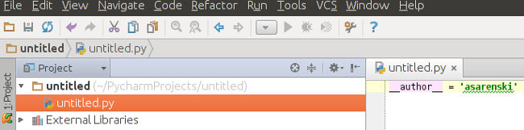
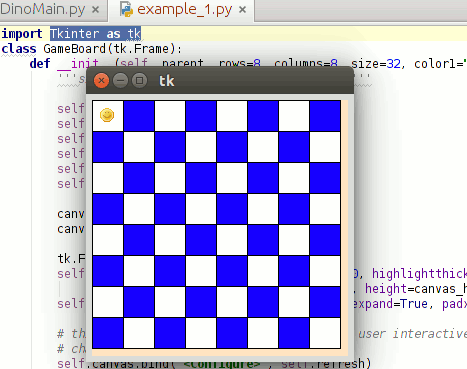

The easiest way to follow a tutorial is to have a copy of the completed project. Git makes this really easy. Open a terminal. Navigate to where you would like to create a copy of the folder. Type:
This creates a cloned directory of the finished project.
Open the project, which was created during this part of the requirements tutorial. Right-click your project folder and select new > Python File. The project tree should look like this now.
Let's get started. At the head of the file type:
This command imports the functions from the Tkinter module. Let's also create a main function.
def main():
root = Tk()
root.mainloop()
main()
If you run this, Tkinter creates a Tk instance and runs it in the main event loop. This means that if we want to write a while function, then it will interfere with Tkinter's main loop. We'll get into how to write a while function in a different manner. Now that we understand how a basic Tkinter instance is written, let's borrow some code. Go Here. Or use this popover:
This is how the basic board is created. A short explanation is the instance of Tkinter creates a Frame, which is like a window on your computer. Then it takes the canvas, which is packed into the frame, and draws whatever you tell it to draw.
If you copy that code, paste into an empty .py, and run, then this is what you will see:
A cute little smiley! If you notice, you can resize the board. This is how the refresh function comes into play. The refresh function takes event as one of its arguments. In this case the "<Configure>" of our size is our event. Because the board is a big square, the code calculates the minimum size needed. The squares are deleted from the canvas. The squares are then redrawn with the new size. The important part to take-away from this is how to remove objects from the canvas and then put them back in the same spot. This allows you to perform animations.
Borrow the code provided from stackoverflow, submitted by Bryan Oakley. We will work from that code. But because resizing is a pain with regards to resizing imported images, it is turned off in my code. In the main function:
Note that the difference between DinoMain.py and the stackoverflow code is that DinoMain.py imports the functions of Tkinter. The stackoverflow code imports the Tkinter module itself as tk. This means that you have to reference the module when a Tkinter function is called if you go that route. Now specify your board. Just make sure size is set to 96. I made mine a 5 row x 6 column board with old lace and turqoise coloring. Have fun!
class DinoFrame(Frame):
def __init__(self, master=None, rows=5, columns=6, size=96, color1='old lace', color2="pale turquoise"):
"""Initializes the main frame with game-board."""
Next you need to replace the information image with your customized player image.
Go get an image to act as the player for the game. Download whichever picture you want, that has a black or white background. Just make sure it is big enough to shrink down to 95x95 pixels. Next go to the Ubuntu Software Center and download GIMP. It is a free image editor. It's basically free Photoshop. Now follow this tutorial to create a copy of your picture with an opaque background. Next, in GIMP, go to the image drop-down menu and select Scale Image. Make it max 95x95. Next file export as a .gif! This is really important.
Tkinter's PhotoImage method only takes .gif files as input.
Take the exported copy in the form of a .gif, and move it to your project folder where your version of DinoMain.py resides. If you still have the image data from Bryan Oakley's submission, select it all and delete. This is what you need to add to your main function:
player1 = PhotoImage(file='your_image_name.gif')
# calls the piece method arguments are (name, image, row, column)
app.piece("player1",player1,0,0)
Note that the image name needs to be in the form of file=string. In other words you need to type it with the quotes. With the app.piece, which is equivalent to Bryan Oakley's board.addpiece, we have added player1 to a pieces dictionary. The dictionary is initialized in the def __init__ of the Frame. If you run this code, you should see your image in the top-left square of the board.
Key bindings are essential to making the player move around the board. The first thing we want is to add the key bindings to the main Tk instance.
root.bind("<Escape>", lambda e: app.quit())
root.bind("<Left>",app.leftkey)
root.bind("<Right>",app.rightkey)
root.bind("<Up>",app.upkey)
root.bind("<Down>",app.downkey)
root.bind("<space>",app.spacebar)
Now we have added bindings to the main Tk instance, but the methods being called do not yet exist. We need to add these as functions somewhere in the Frame class, below the initialization function. This is the main piece of code that moves the player around the board.
# moves the player 1 space over, which is 96 pixels
self.canvas.move('player1', -1*self.size, 0)
# changes the coordinate system
self.pieces['player1'][0] = self.pieces['player1'][0]-1
In this example we tell the canvas to move the picture to the left, by the amount self.size. The variable self.size is set in our initialization method of the Frame class. The changes in the coordinate system are modifying the x-variable in the self.pieces dictionary. By saying set 'player1's x-variable to 'player1's x-variable minus one. Then we add the if, else statement, which allows us to contain the player within the visible portion of the canvas. For now, in the spacebar you can just put "pass" or "print space" like this:
def spacebar(self,event):
pass
Now we need to get some numbers drawn on the board. This means we need to create a function like the refresh function, but we don't want it bound to an event. My example in DinoMain.py is the shownumber function. It takes a list of numbers or text, deletes any text currently on the canvas, and draws the list on the board.
We need a list to input to the shownumber function. This is where MathFile.py is needed. We need a separate set of functions, which can generate numbers. Those numbers need to be generated to meet certain mathematical operations. If you open MathFile.py, and look at the bottom math_main function, you see that it takes an op_type as an argument. It uses this op_type to call an instance of the Mathfile class with a subclass of the particular op_type, for example Multiplication.
The Mathfile parent class initializes variables to be used by the subclass. Let's walk-through one of the sub-classes. Multiplication starts by creating a multiplication table such as those in elementary school.
# creates a multiplication table to choose a op_number from
multiplication_table = []
for i in range(2,11):
for j in range (2,11):
multiplication_table.append(i*j)
self.op_number = random.choice(multiplication_table)
At the end of this piece of code the choice method is called from the random library. The choice method, in this case, selects a random choice from the table. Next we randomly generate two lists, which have individual values between one and eleven.
#initial random gen
for i in range(30):
number = random.randrange(1, 11)
number2 = random.randrange(1, 11)
self.num_list.append(number)
self.num_list2.append(number2)
Then because these are randomly generated numbers we need to make sure at least four of the numbers satisfy the requirement of the operation.
#makes sure the first 4 entries satisfy x * y == self.op_number
for i in range(4):
x = self.num_list[i]
y = self.num_list2[i]
while x * y != self.op_number:
x = random.randrange(1,11)
y = random.randrange(1,11)
self.num_list[i] = x
self.num_list2[i] = y
The next step is to make some sort of marker telling whether or not the operation is true or false.
#marks the numbers
for i in range(30):
if self.num_list[i] * self.num_list2[i] == self.op_number:
self.number_marker.append(1)
else:
self.number_marker.append(0)
self.shuffle_the_list()
self.create_dict()
Note that every time we state "for i in range(30):" the list will count from zero to twenty-nine (0-29). The self.shuffle_the_list() and self.create_dict() methods are both inherited methods from the parent class. The shuffle_the_list method organizes the random lists and their contents. The create_dict method takes the returned list and turns it into a dictionary. This dictionary can then be returned to DinoMain.py or whichever file calls math_main.
You can look at how the other operations were set-up. Some of them can be better optimized. If you want you could actually tweak and make the game more difficult by increasing the range on the randomly generated numbers.
After some work you should have a file that when the main method is called, the file returns a dictionary. Let's say you wanted to test out your files for multiplication. In DinoMain.py you need to declare the variables used to draw the numbers.
'''variables used initially by the callbacks and drawing the numbers''' # number marker for right or wrong answer self.number_marker = [] # number list used to draw self.drawn_number = [] # the comparative number self.op_number = 0 # the type of comparison operation self.op_type = ''
Then you need to create a function in the Frame class. In our case just name this function callback2(). In this function we set the op_type to Multiplication. We set math_dict to the return of math_main. The for loop is used to unpack the math_dict into tuples, which are an immutable list form in Python. Once this is unpacked we call the shownumber method. Remember that shownumber is like refresh for the numbers instead of pieces.
def callback2(self):
self.op_type = "Multiplication"
math_dict = math_main(self.op_type)
for i in range (30):
xtuple = ()
xtuple = math_dict[i]
self.drawn_number.append(str(xtuple[0])+'x'+str(xtuple[1]))
self.number_marker.append(xtuple[3])
self.op_number = xtuple[2]
self.shownumber(self.drawn_number)
Once this has been added to the code let's call callback2 in the __init__ of the Frame. This is only temporary so that we can test the code. Place it under refresh like this:
# initializes the checkered board with self.refresh self.refresh() # calls multiples self.callback2()
At this point you should have a size-static board with a picture representing the player. The multiplication operations should be drawn in the squares on the board. You also need to create callback functions for the other desired operations. Now we need to create a menu so that the player can select the type of operation via mouse input.
Bryan Oakley once again comes to the rescue with another handy example of how one would create a frame with callback buttons, which represent page numbers. You can find this code on stackoverflow follow-link.
After studying Bryan's code for some amount of time, we see that he has created a Page class. He then individualizes this parent class into subclasses. He creates MainView, which is the main Frame of the application. He instantiates the pages inside MainView. He makes it so that lifting the frame of the following page is the callback function of the current page.
In DinoMain.py I have created a separate frame for the select menu, but the board and player are in the same frame. After modifying the Page class to suit our needs we place the necessary code for the select menu in the __init__ of our DinoFrame. Here we are setting the buttons from the select1 menu to the functions like callback2 in our DinoFrame. At the end of the code we lift the select1 frame so that it is displayed. It is hovering inside DinoFrame and over the board.
# initializes the frame Frame.__init__(self, master) # setting all the buttons for the select menu self.select1 = Select_Menu(self, '', height=100, width=300) # setting the button commands to the functions below self.select1.callback1 = self.callback1 self.select1.callback2 = self.callback2 self.select1.callback3 = self.callback3 self.select1.callback4 = self.callback4 self.select1.callback5 = self.callback5 self.select1.place(x=0, y=50, relwidth=1, relheight=1) # sets the select menu as the top layer on Frame self.select1.lift
Remember to delete the line where you call callback2 in the __init__ of the Frame. You are now calling select1 instead. Once you have all the callback functions written properly they should call the select1 class methods. They should also display the numbers from the appropriate operations. If you're having trouble just take a quick break, then come back and make sure everything is spelled correctly.
While we do the select menu this is also a good time to create the operation, score, and level trackers. This piece of code should be placed under where the select1 code resides:
operation_label = Label(master,justify="c", textvariable=self.v,
font=("TkHeadingFont", "16"), pady=10).pack({"side": "top"})
self.v.set("Select an Operation")
score_label = Label(self, justify='c', textvariable=self.v1).pack({'side':'top'})
self.v1.set('Score: '+ str(self.point_track))
level_label = Label(self, justify='c', textvariable=self.v2).pack({'side':'top'})
self.v2.set('Level: '+str(self.level_track))
For each one of these we are using the Tkinter Label class. In our case we want to use a variable, which can be modified after certain events. These variables are v, v1, and v2. We should also declare these variables in the upper portion of the DinoFrame code where we are declaring the other variables. We'll talk about mlevel_track and life_track later.
#string variable for label for operation self.v = StringVar() # string variable used for the score tracker self.v1 = StringVar() # string for the level counter self.v2 = StringVar() # int variable used to track points self.point_track = 0 self.level_track = 1 # used to increase the difficulty of the meteor self.mlevel_track = self.level_track # number of lives at the start self.life_track = 3
The labels should display at the top of the frame. It is time to add some functional buttons to the bottom of the frame. Create the createwidgets function as shown in DinoMain.py. For now only do QUIT and hi_there buttons. QUIT needs no other functions. The hi_there button uses a function named print_numbers. This is so you have an easier time testing your code and testing the player's experience of the game. hi_there will print the numbers of the board and if they satisfy the operation. Remember to call the createwidgets function at the bottom of the the DinoFrame __init__Try running everything to make sure it works.
Most of the game's framework is now up and running. It's time to flesh out the experience. It is time to modify the spacebar function so that it will perform an action by the player. When the player hits space we want to be able to judge if the selection satisfies the mathematical operation. If there is something there and it satisfies the operation we want to add points. If it doesn't satisfy we want to subtract a life. In either case we want to erase that particular number from the board and erase its number_marker.
First we need to know where the player is within this instance.
# x-variable for the player's location x0 = self.pieces['player1'][0] # y-variable for the player's location y0 = self.pieces['player1'][1]
Next we need to translate this location to a number 0:29 so that we can find it in the dictionary.
# this is the translation to 0:29 for numbers dictionary numbers_entry = x0 + y0*self.columns print "space hit"
Now we determine if the space is blank, ''. If not, we determine if the number_marker indicates that the contents of the space will satisfy the operation, 1. Else, then the answer is wrong and we subtract a life from life_track, which starts at three. We will get to half_restart_game(), rex_lives(), and rex_noise() later. Make your spacebar event perform the necessary functions of judging numbers, erasing numbers, and subtracting lives.
We are tracking lives in the background, but we want to show the player how many lives they have. The rex_lives function performs this task. This function sees how many lives the player has and shows the appropriate image on an image label LIVES. Skip the restart_game() portion, because we will add that functionality next.
def rex_lives(self):
""" Lives Tkinter label."""
if self.life_track == 3:
imgstr = "rex_lives3.gif"
elif self.life_track == 2:
imgstr = "rex_lives2.gif"
elif self.life_track == 1:
imgstr = "rex_lives1.gif"
elif self.life_track <= 0:
imgstr = "rex_lives0.gif"
self.restart_game()
self.lives_image = PhotoImage(file=imgstr)
self.LIVES['image'] = self.lives_image
LIVES is written under the createwidgets function.
# intial player lives
self.LIVES = Label(self)
imgstr = "rex_lives3.gif"
self.lives_image = PhotoImage(file=imgstr)
self.LIVES['image'] = self.lives_image
self.LIVES.pack({'side':'right'})
You also need to go back to the spacebar function and make sure it calls rex_lives at the appropriate time. Your code should now display different images in the bottom-right depending on the player's actions. We need to be able to end the game if the player runs out of lives. This is the restart_game function. We delete everything drawn on the canvas:
self.canvas.delete("piece")
self.canvas.delete("the_text")
self.canvas.delete ("circle")
We re-initialize the player and lift the select menu. This does unfortunately present a bug. The player can move around the board before the game starts. It does not actually affect gameplay.
self.player1 = PhotoImage(file='rex_skull2.gif')
self.piece("player1",self.player1,0,0)
self.select1.lift()
The variable for the operation label states information from the last game.
self.v.set("Game Over , Your Score: " + str(self.point_track) + ", Max Level: " + str(self.level_track))
We delete the number lists, op-number, and op-type, then re-declare.
del self.number_marker self.number_marker = [] del self.drawn_number self.drawn_number = [] # the comparative number self.op_number = 0 # the type of comparison operation self.op_type = ''
We reset some other variables and lift the buttons at the bottom.
# int variable used to track points self.point_track = 0 self.level_track = 1 self.mlevel_track = self.level_track # number of lives at the start self.life_track = 3 self.QUIT.lift self.hi_there.lift
You also need to make sure to write the code for the restart button so that the player can end the game and go back to the select menu. This is written in the create_widgets function as restart_button. A half_restart is almost the same thing as a full restart of the level. The difference is that the operation is selected automatically as the same operation. Also score, lives, and level at kept instead of deleted. Make sure that the spacebar judges if all number markers are zero. If they are then perform a half_restart.
Now comes the fun part. Our poor T-rex dinomuncher is at the height of his evolution during the late Cretaceous. His bite strength is the strongest of any land-dwelling animal in history, ten times stronger than a Gator's. He has no natural predators. What is a T-rex's worst enemy? Extinction of course! Scientists concur that the mass extinction event at the end of the Cretaceous period was initiated by a massive asteroid. See Cretaceous–Paleogene extinction event at wikipedia.
It is time we create something that makes the game a little more interesting..... and cruel. As stated previously
animation in Tkinter is performed through creation and deleting of images. This is very similar to playing individual
frames of a movie. Go to this website to get a better feel for the images that can be drawn.
Now let's say we want to create a looping animation. Instead of using the sys module to sleep the main event loop, we need to use Tkinter's functions.
This is in the form of after(). These are both examples I used to help understand how after() works:
http://stackoverflow.com/questions/2400262/code-a-timer-in-a-python-gui-in-tkinter
http://stackoverflow.com/questions/9342757/tkinter-executing-functions-over-time
This means that these are while functions that have to be turned-off with a switch. In our case the switch is self.menuon. When this is on the meteor loop does not play. The select menu callbacks then close the switch to allow it to play. The code for this meteor loop shows and hides the three different sized circles to indicate where the meteor will hit. The meteor image is then shown on the board and the player loses a life.
Pyglet is very similar to Tkinter. It uses the main event loop to perform actions like playing music. The most useful feature of Pyglet is that we can play various sound encodings very simply.
def explosion(self):
''' used to simply play a sound, no music'''
sound = pyglet.resource.media('explosion-01.wav', streaming=False)
sound.play()
A function to play a sound can be written in three lines. Something like this using Python's Wave module would normally take at least fifteen lines of code. Unfortunately because Tkinter is already using the main event loop we can only play little sound bites. If you want you can dig further into Pyglet. Perhaps there is a way to do little bites of sound.play() and put them into an after() loop. I fiddled and was unable to provide a solution. Anyway, you call the sound methods whenever you want the sounds to play depending on the events being performed.
If you made it this far I thank you for taking the time to read my guide. I hope it helped you understand the basics of how to set up a Tkinter program. If you think you know someone who would enjoy this guide, then please forward the link. If you liked the guide please donate. Thanks!